Olympic National Park Travel Guide
National park highlightng four regions: the Pacific coastline, alpine areas, the west-side temperate rainforest, and the forests of the drier east side and three distinct ecosystems
General Information
Hurricane Ridge Visitor Center
Summer Hours - Memorial Day to Mid October
Open daily 10am to 5pm
Spring Shoulder Season - April 1 to May 30
Hurricane Ridge Visitor Center is closed during the shoulder season month of April.
Open Friday to Sunday 10am to 4pm
Closed Monday to Thursday
Winter Hours
Thanksgiving Day to March 31
Open Friday to Sunday 10am to 4pm
Closed Monday to Thursday
Monday to Friday, 7:45am to 4:30pm. Closed federal holidays. Summer (late June-Sept.): may also be open on weekends and holidays
Olympic National Park Visitor Center
Open daily year-round; closed Thanksgiving and Christmas Day. Hours vary according to season.
Hoh Rain Forest Visitor Center
Open daily in summer; Friday - Sunday in the off-season and closed January/February. Hours vary according to season.
Valid for seven consecutive days. Applies to private, non-commercial vehicles (15 passenger capacity or less). The pass covers all vehicle occupants.
Motorcycle: $25.00
Per Person and Bicyclists - $15.00
Valid for seven consecutive days. This fee admits one person without a vehicle, including hikers, bicyclists, and pedestrians. Individuals fifteen years or younger are admitted free of charge.
Accepts America The Beautiful Pass.
- Peabody Creek Trail (Olympic National Park Visitor Center in Port Angeles)
- Rialto Beach parking lot to Ellen Creek (1/2 mile)
- The beaches between the Hoh and Quinault Reservations (Kalaloch area)
- Madison Falls Trail (Elwha)
- Spruce Railroad Trail (North shore of Lake Crescent)
- July Creek Loop Trail (North shore of Lake Quinault)
How to Get There
Follow I-5 S, WA-16 W and WA-3 N to WA-104 W in Kitsap County. Head southwest on Madison St toward 4th Ave. Turn right after Bartell Drugs (on the left). Turn right at the 1st cross street onto Spring St. Turn right onto the I-5 S ramp to Portland. eep left, follow signs for Sea-Tac Airport/I-5 S and merge onto I-5 S. Use the right lane to take the exit toward WA-16 W. Keep right at the fork to continue on Exit 132B, follow signs for WA-16 W. Keep left and merge onto WA-16 W. Merge onto WA-3 N. Turn left onto WA-104 W. Keep right at the fork, follow signs for US-101 N and merge onto US-101 N. Turn right onto E Front St. Turn left onto N Race St. Continue onto Mt Angeles Rd. Turn right.
Overview
Olympic National Park on Washington's Olympic Peninsula protects nearly a million acres of three distinct ecosystems: glacier-capped mountains, temperate rain forest, and more than 70 miles of wild Pacific coastline. Few places in the country show such variety in one park, with snow on the peaks of the Olympic Mountains, moss-draped forests in the Hoh and Quinault valleys that receive 12 to 14 feet of rain a year, and sea stacks and tide pools on the beaches. The park is a UNESCO World Heritage Site and International Biosphere Reserve, and the park is rich in wildlife, including the largest herd of Roosevelt elk in the world.
Olympic was established in 1938 by President Franklin D. Roosevelt, in part to protect the Roosevelt elk, and the coastal strip was added in 1953. People visit to walk among giant spruce and hemlock in the Hoh Rain Forest, watch the sun set over sea stacks at Ruby Beach, drive up to Hurricane Ridge for mountain views, soak in hot springs, and swim or paddle in Lake Crescent. The park has no road across it, so each area is reached separately from US-101.
Park Sections
The park is organized into separate regions, each with its own character. In the north, Hurricane Ridge offers alpine views above Port Angeles, Lake Crescent and Sol Duc have a deep blue lake, waterfalls, and hot springs, and Elwha River shows a restored salmon river. On the west side, the Hoh Rain Forest and Quinault have rain forests. The coast has Kalaloch and Ruby Beach, Mora and Rialto Beach, and the remote Ozette and Cape Alava. Lake Cushman and Staircase are in the southeast.
Sightseeing and Exploring the Park
The 17-mile Hurricane Ridge Road from Port Angeles climbs to 5,242 feet with views of the Olympic Mountains and, on clear days, Vancouver Island, and the gravel Obstruction Point Road goes farther in summer. The Hoh Rain Forest Road leads 18 miles to the visitor center, and US-101 passes Lake Crescent, Lake Quinault, and the coast. Beach viewpoints include Ruby Beach, the Kalaloch beaches, and Rialto Beach, with the Hole-in-the-Wall sea arch. The drive around the peninsula on US-101 is about 330 miles, and many visitors take two or three days.
Hiking
The park has about 600 miles of trails. In the Hoh Rain Forest, the Hall of Mosses (0.8 miles) and the Spruce Nature Trail (1.2 miles) are easy, and the Hoh River Trail goes 17 miles to Glacier Meadows at the base of Mount Olympus. Near Lake Crescent, Marymere Falls (1.8 miles round trip) is a popular waterfall hike, and Sol Duc Falls is a short walk. Hurricane Hill (3.2 miles round trip) has views of the mountains and strait. On the coast, Rialto Beach to Hole-in-the-Wall (about 3 miles round trip) and the Ozette Triangle (about 9 miles) are favorites. Check tide tables when hiking on the coast.
Other Activities
Besides hiking, the park is known for tide pooling at Kalaloch and Rialto Beach, beachcombing, kayaking and boating on Lake Crescent, soaking in the Sol Duc Hot Springs, fishing, and wildlife watching. Backpacking on the wilderness coast and in the mountains requires permits. In winter, Hurricane Ridge offers snowshoeing, cross-country skiing, and a small ski hill when conditions allow. Ranger programs are offered at several locations. The park has no cave tours, and boat tours are available only on Lake Crescent through the lodge.
Flora and Wildlife
The park's temperate rain forest, one of the few in the world, features Sitka spruce, western hemlock, and bigleaf maple draped in mosses and ferns, with trees up to 300 feet tall. Wildflowers fill the alpine meadows in July and August. Roosevelt elk are commonly seen in the Hoh and Quinault valleys. Other wildlife includes black-tailed deer, black bears, Olympic marmots (found only here), mountain goats, bald eagles, and, along the coast, sea stars, anemones, sea otters, and migrating gray whales in spring. Viewing is on your own, and elk are most active at dawn and dusk.
Access
The park is on the Olympic Peninsula in northwestern Washington and is reached via US-101. Port Angeles, the main gateway on the north side, is about 2.5 to 3 hours from Seattle by ferry and road, using the Seattle-Bainbridge or Edmonds-Kingston ferries and the Hood Canal route, or via Olympia and US-101. Ferries also run from Victoria, British Columbia. Seattle-Tacoma International Airport is the closest major airport, and William R. Fairchild International Airport in Port Angeles has limited service. The park is large, so allow time for driving between areas.
Seasons
Summer is the driest and busiest season, and it is best for Hurricane Ridge, the high country, and the coast. The rain forests stay green and misty year-round, and the Hoh gets rain even in summer. Fall is the best time for elk, and the rain forest becomes lush with the first rains. Winter brings heavy rain on the west side and snow at Hurricane Ridge, which is open only on certain days, and storms can close roads. Spring has wildflowers at lower elevations, and wildlife viewing is good. Obstruction Point Road is open only in summer.
Camping and Lodging
The park has 16 campgrounds, including Kalaloch, Mora, Hoh, Sol Duc, Fairholme, and Staircase, and some take reservations. Backcountry camping requires a permit. Lodging in the park includes Lake Crescent Lodge, Log Cabin Resort, Sol Duc Hot Springs Resort, and Kalaloch Lodge, and Lake Quinault Lodge is just outside the park. Port Angeles, Sequim, and Forks have motels, inns, and hotels; Forks, on the west side, is a base for the Hoh and coastal areas. Port Townsend, about 1.5 hours east, has historic inns.
Visitor Centers
The Olympic National Park Visitor Center in Port Angeles is open year-round and has exhibits, a film, a bookstore, and the Wilderness Information Center. The Hurricane Ridge Visitor Center is open in summer and on winter weekends when roads allow, and the Hoh Rain Forest Visitor Center is open most of the year. The Storm King Ranger Station at Lake Crescent and the Kalaloch Ranger Station are open seasonally. Hours vary by season, so check the National Park Service website.
Areas at a Glance
| Area | What to Expect |
|---|---|
| Hurricane Ridge | Alpine views, meadows, and winter snow play |
| Lake Crescent and Sol Duc | A deep blue lake, waterfalls, and hot springs |
| Hoh Rain Forest | Moss-draped old-growth forest |
| Kalaloch and Ruby Beach | Southern coast beaches and sea stacks |
| Cape Alava and Ozette | The northern wilderness coast |
| Quinault | A rain forest lake and valley to the south |
| Mount Olympus and Elwha River | The high peaks and a restored salmon river |
This article uses material from the Wikipedia article and official pages for Olympic National Park, released under the Creative Commons Attribution-Share-Alike License 3.0. Additional information comes from the National Park Service Olympic National Park website.
Featured Locations and Trails

Jeff P from Berkeley, CA, USA, CC BY 2.0, via Wikimedia Commons; Image Size Adjusted
.jpg){kind=link}
Elwha River
45-mile (72 km) river on the Olympic Peninsula with most of the river's course within the Olympic National Park
Hoh Rain Forest
One of the largest temperate rainforests in the U.S. including 24 miles (39 km) of low elevation forest 394 to 2,493 feet (120 to 760 m) along the Hoh River

Hurricane Ridge
Mountainous area in Washington's Olympic National Park, open to hiking, skiing, and snowboarding and is one of the two most visited sites in the national park
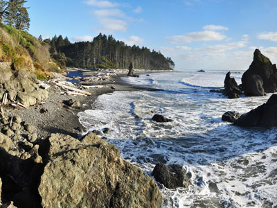
Jeff P from Berkeley, CA, USA, CC BY 2.0, via Wikimedia Commons; Image Size Adjusted
Kalaloch and Ruby Beach
Southern coast of the Olympic Peninsula providing amazing sights of the pristine beaches and marine wildlife
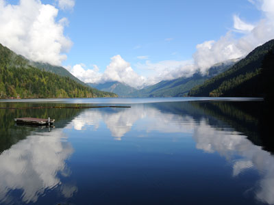
Jeff P from Berkeley, CA, USA, CC BY 2.0, via Wikimedia Commons; Image Size Adjusted
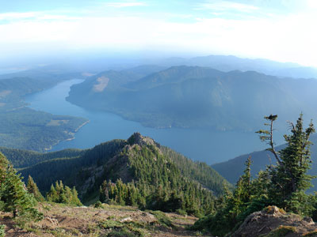
Jeff P from Berkeley, CA, USA, CC BY 2.0, via Wikimedia Commons; Image Size Adjusted
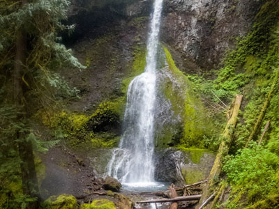
Jeff P from Berkeley, CA, USA, CC BY 2.0, via Wikimedia Commons; Image Size Adjusted
Marymere Falls Trail
90 feet falls located in Olympic National Park near Lake Crescent are accessed by a one-mile, well maintained, dirt trail through old-growth lowland forest consisting of fir, cedar, hemlock, and alder trees
90 feet falls located in Olympic National Park near Lake Crescent are accessed by a one-mile, well maintained, dirt trail through old-growth lowland forest consisting of fir, cedar, hemlock, and alder trees
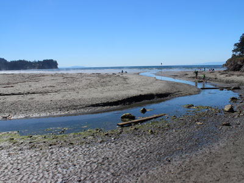
Jeff P from Berkeley, CA, USA, CC BY 2.0, via Wikimedia Commons; Image Size Adjusted
Mora and Rialto Beach
Features rocky beaches, giant drift logs, pounding waves and views of offshore islands known as 'seastacks'
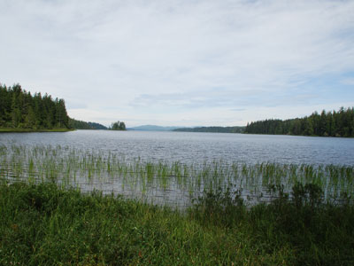
Jeff P from Berkeley, CA, USA, CC BY 2.0, via Wikimedia Commons; Image Size Adjusted
Ozette
Park area located on the northwestern coast of the Olympic Peninsula, containing tall seastacks that dot the coast, crystal waters of Lake Ozette, and grandeur of old growth forests
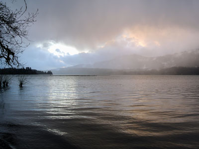
Jeff P from Berkeley, CA, USA, CC BY 2.0, via Wikimedia Commons; Image Size Adjusted
Quinault
Temperate rain forest called the "Valley of the Rain Forest Giants" because of the number of record size tree species located there
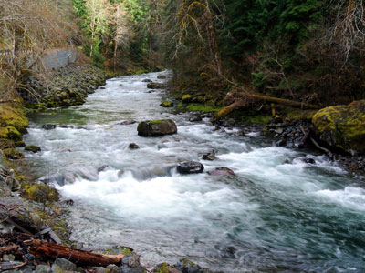
Jeff P from Berkeley, CA, USA, CC BY 2.0, via Wikimedia Commons; Image Size Adjusted
Sol Duc Valley
River in Washington about 78 miles (126 km) long that flows west through the northwest part of the Olympic Peninsula, from the Olympic Mountains of Olympic National Park and Olympic National Forest, then through the broad Sol Duc Valley
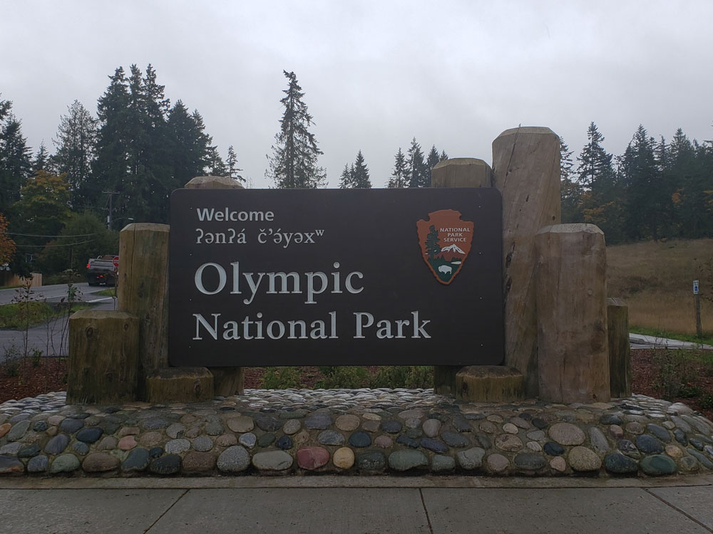
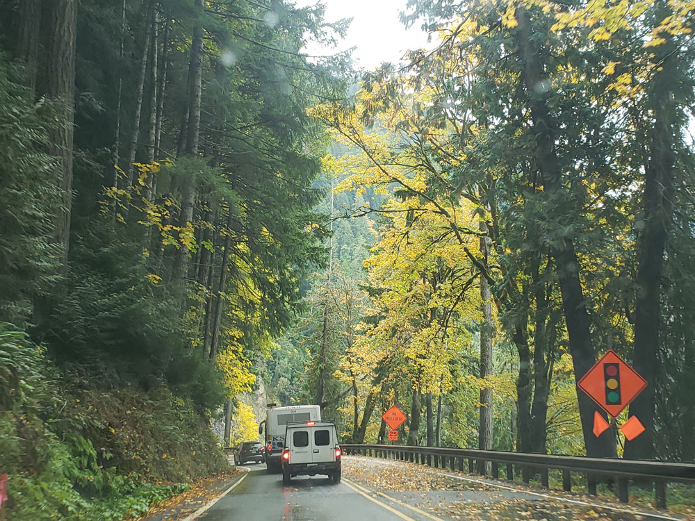
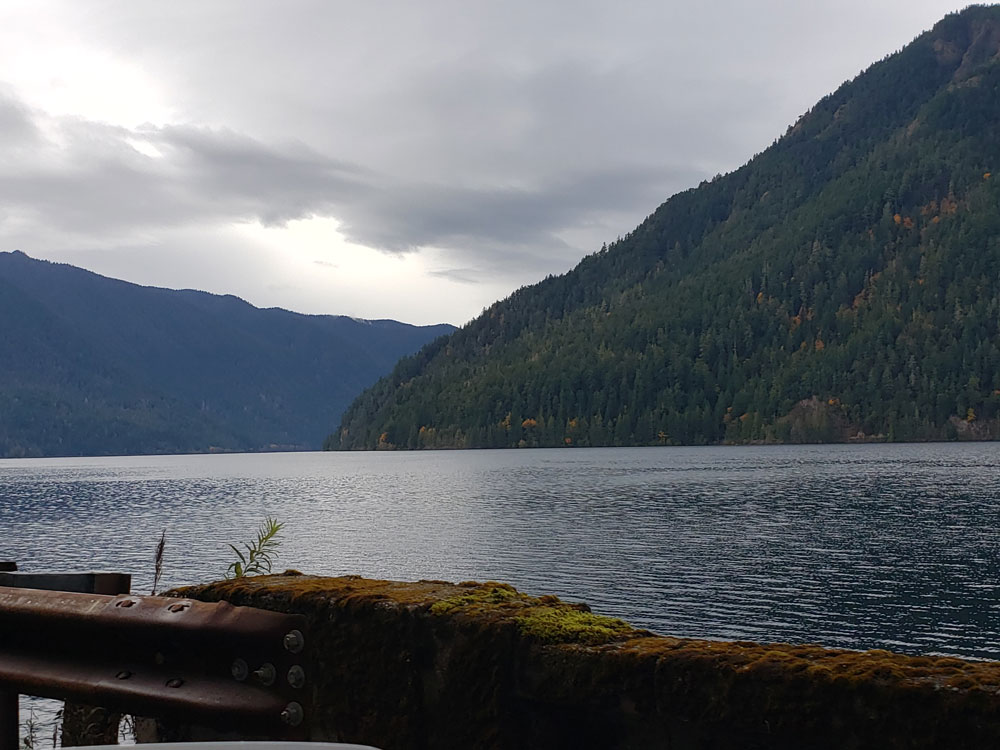